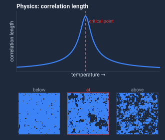
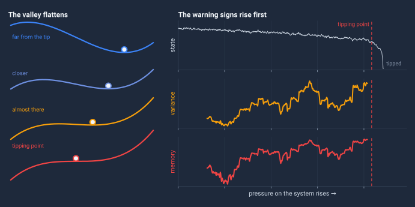
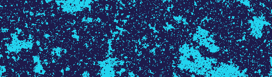
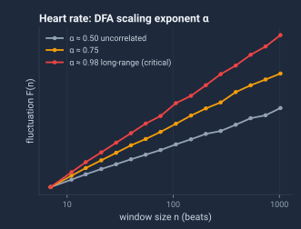
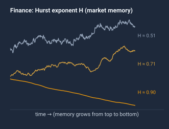
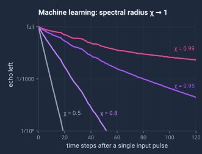
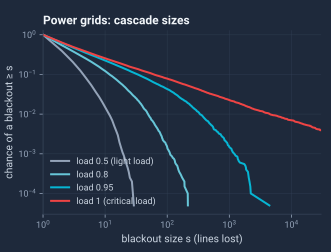
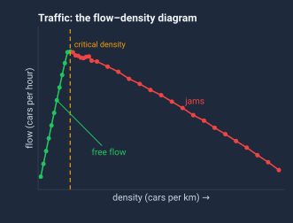
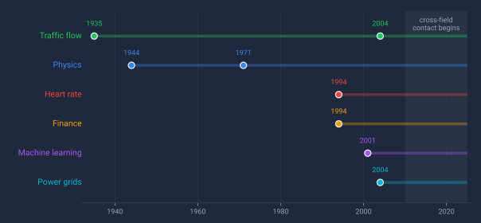

Physics · 1944
Correlation length: how far one part of a magnet feels another. It grows without limit at the critical point.1 Simulatedlattices; Schematiccurve.
The same mathematics warns of market crashes, power-grid blackouts and heart failure.

Near a tipping point, a system shows critical slowing downThe system takes longer and longer to recover from small disturbances as it nears a tipping point.: it recovers more slowly, and its varianceHow widely the measurements swing around their average. and memoryAutocorrelation: how much each measurement resembles the one just before it. rise. At least six fields found the math that measures this, with varying degrees of independence and little contact between them.

Interactive tutorial: What is multicriticality? What happens when tipping points interact. Four live demonstrations.Each field gave the signal its own name. Underneath, all of them ask one question: how far do correlations reach? The math identifies when these transitions become possible — even if it can't say exactly when they'll happen.

Correlation length: how far one part of a magnet feels another. It grows without limit at the critical point.1 Simulatedlattices; Schematiccurve.

DFA scaling exponent α. Near 0.5, beats are uncorrelated; near 1, correlations reach across long stretches. In hearts, α near 1 signals lost regulation.2 Simulatedseries.

Hurst exponent H: market memory. At 0.5, prices walk at random. Above it, the past shapes the future. During market stress, H approaches 1.3 Simulatedprices.

Spectral radius χ of a recurrent network. As χ nears 1, one input echoes longer and longer: the network sits at the edge of chaos.4 Simulatednetwork.

Cascade prediction. As load rises toward a critical point, blackout sizes spread into a power law, so huge blackouts become far likelier.5 Simulatedcascades.

Critical density: the congestion tipping point. Below it, traffic flows freely. Above it, jams form and flow falls.6 Simulatedtraffic.

Each field published in its own journals, invented its own terminology, and cited its own literature. Cross-domain awareness was minimal until after 2010.
A cardiologist in 1996 could have used techniques a physicist published in 1971.7 But she'd have had to find a statistical mechanics journal, recognize the connection through completely different notation, and translate it to biological data. That almost never happened.
So the tools got reinvented. Multiple times. In separate journals behind separate paywalls. Meanwhile the applications waited.
Why did it stay fragmented for so long?
The paper documents the pattern. It doesn't claim to fully explain it.
The math works. It's been validated across domains for decades. And it's fundamental — derivable from first principles, not proprietary to any field.
It should be free.
The page above teaches the idea; the paper holds the full evidence. It classifies each field's discovery, and tests citation networks for contact between fields.
Key prior work: Didier Sornette, Critical Phenomena in Natural Sciences (2004) — the most important prior synthesis; we build on it.8
The individual discoveries are known. What's new is documenting the full convergence pattern — classifying each instance by type and providing citation network evidence that these fields remained siloed for decades.
Sornette's Critical Phenomena in Natural Sciences is the most important prior synthesis; we build on it. Our contribution adds a discovery classification taxonomy and quantitative citation analysis showing parallel development continued even after his synthesis.
arXiv is how physics papers reach the community. Journal review is a separate, longer process — arXiv makes the work immediately accessible, consistent with our argument.
Fully disclosed. The authors' own framework is in the Supplementary Material and is excluded from the count; the pattern stands on the other discoveries.
Related topic. The current paper doesn't cover it. A future revision may.
Degree of independence varies — the paper classifies each case. Some fields had zero cross-citation for decades. Others had partial awareness but still re-derived the tools from scratch.